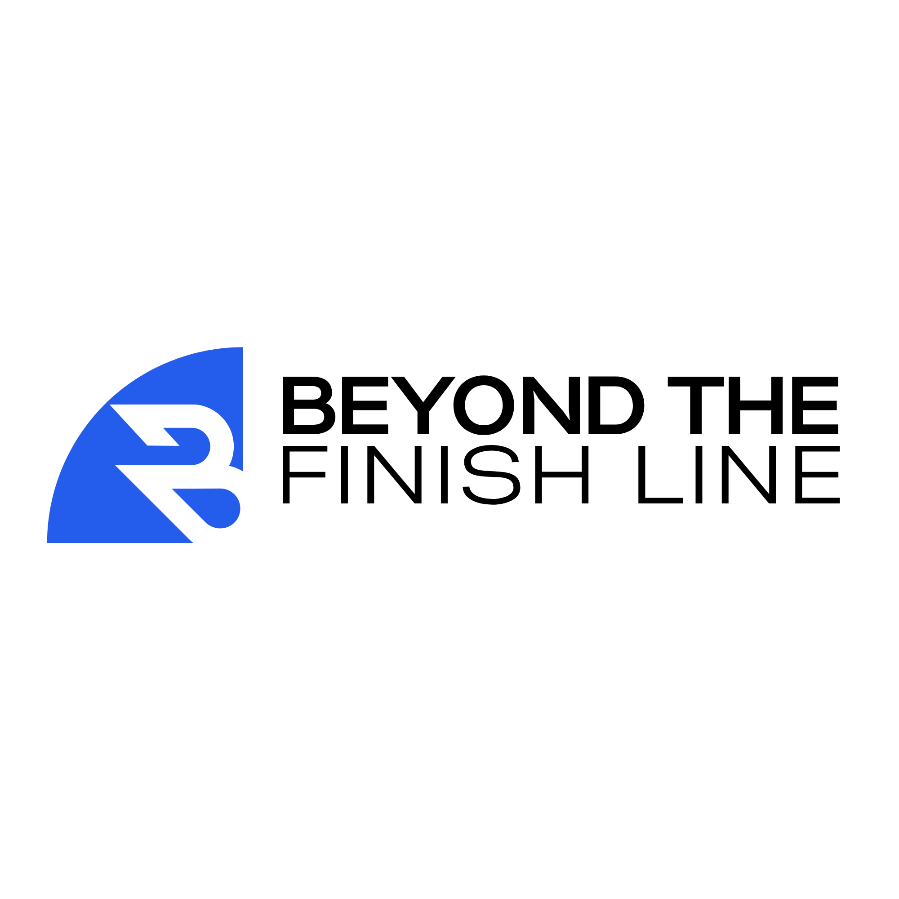
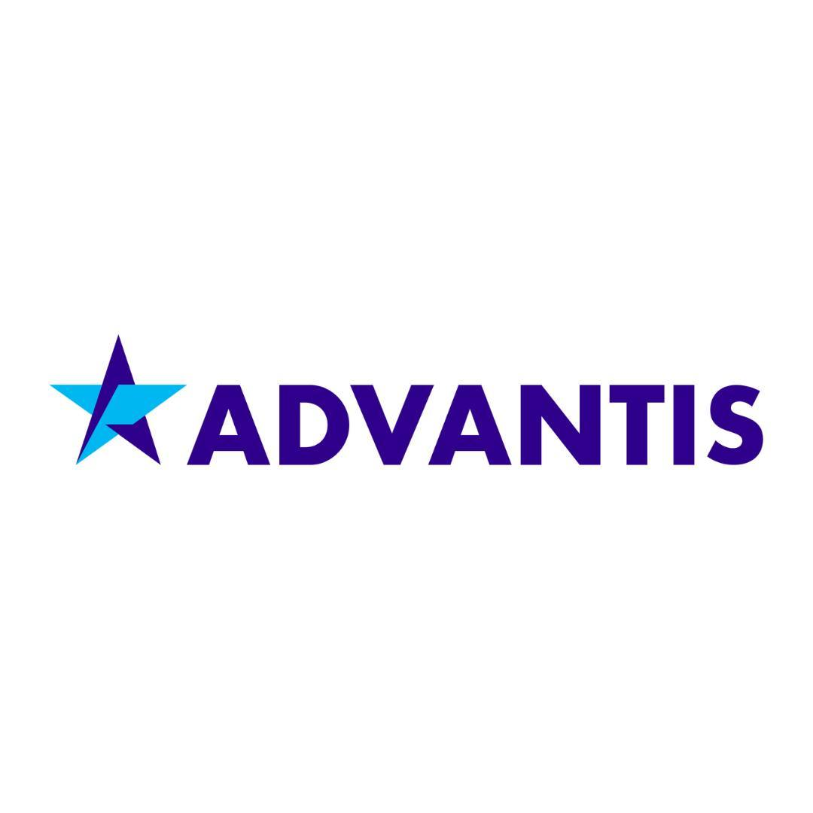
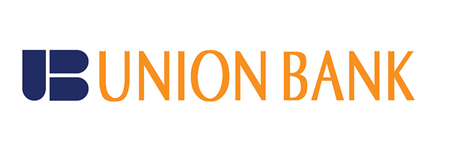
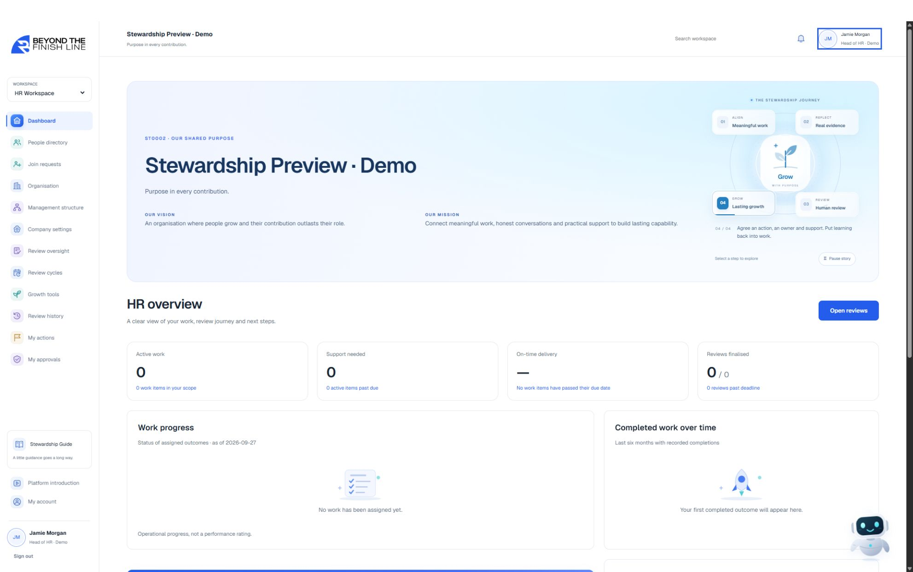
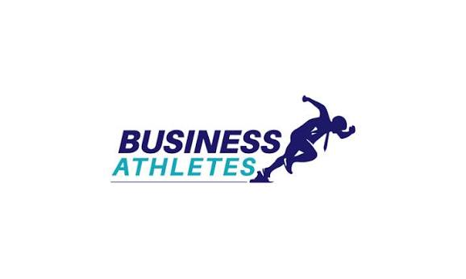
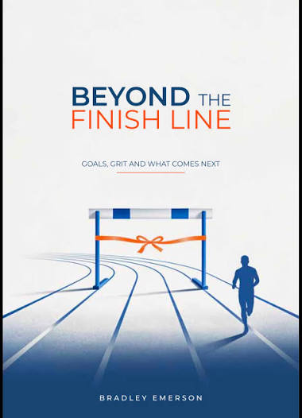

The whole journey.
One shared purpose.
From everyday assignments to Mid-Year and Year-End reviews, keep contribution and development connected.

BEYOND THEBeyond the Finish Line.
Created by Bradley Emerson.
A DIFFERENT WAY FORWARD
Connect work, evidence and development. AI assists the conversation. People decide.
Discover the platform ↗ORGANISATIONS FEATURED BY BUSINESS ATHLETES
Explore the client portfolio ↗


Business Athletes’ training and coaching portfolio.
BEYOND SUCCESS. INTO STEWARDSHIP.
A rating can close a form while leaving the important questions unanswered. What really happened? What is holding someone back? What support will help them grow?
Use specific examples and qualitative assessment to explore current contribution and future potential. Give the employee’s perspective a place in the conversation.
A clearer basis for the next development decision.
Based on Bradley’s Stewardship Performance Appraisal approach. The platform supports the process; good judgement and follow-through remain human responsibilities.
A STEWARDSHIP PRODUCT CREATED BY BRADLEY EMERSON
An AI-assisted stewardship performance platform for companies, managers and their people. Connect everyday work to evidence, thoughtful reviews and development that follows through.
01 / MEANINGFUL WORK
Connect each assignment to an expected outcome. Keep progress, blockers and evidence close to the work that matters.
Let’s explore it together
AI supports the conversation. People make the decisions.
From everyday assignments to Mid-Year and Year-End reviews, keep contribution and development connected.
The appointed Head of HR validates review sources. AI helps surface strengths, gaps and questions for a better conversation.
Agree an action, an owner and the support needed. Steward adds AI-assisted corporate coaching when connected.
ONE CONNECTED JOURNEY
Keep the people, the evidence and the next steps connected.
Agree meaningful outcomes.
Make contribution visible.
Bring the employee’s perspective.
AI assists. People decide.
Agree support and follow through.
Share knowledge. Build capability.
WHAT STEWARDSHIP CHANGES
Bradley’s framework looks at contribution, capability and what a person leaves behind. It gives managers structure for an honest, two-way conversation.
Use observed behaviours and verifiable results. The ECP matrix adds a separate view of current contribution and future potential, without collapsing everything into a single number.
Ability × Motivation × Opportunity
Is there a skill or knowledge gap? Consider coaching, structured learning or an adjustment to the role.
A conversation framework, not an automatic diagnosis.Agree 3–5 commitments with owners, support and timelines. Revisit progress in a 90-day check-in, as recommended in the manager’s guide.
THE PERSON BEHIND THE PURPOSE
Meet Bradley Emerson.
A Sri Lankan corporate trainer, executive coach and author, Bradley brings business experience into the conversations that shape leaders.
As founder of Business Athletes, he helps people discover their potential and build the confidence, clarity and agility to put it to work.
Connect with Bradley on LinkedInYears of business experience
Hours of professional coaching
Practical experience.
Human understanding.
A lasting contribution.
HUMAN EXPERTISE. REAL-WORLD RELEVANCE.

Business Athletes is Bradley’s corporate training and coaching practice. Beyond the Finish Line is the stewardship product he created to carry that thinking into everyday work.
Find your starting pointA focused space to reflect on leadership challenges, clarify your goals and choose the next step with greater confidence.
Discuss this with Bradley ↗Build management confidence with development shaped around the responsibilities and challenges of your organisation.
Discuss this with Bradley ↗Bring business priorities and people’s efforts into alignment, with a clearer direction for the work ahead.
Discuss this with Bradley ↗Start a conversation about a keynote or speaking engagement for your organisation’s next gathering.
Discuss this with Bradley ↗Support emerging and experienced leaders as they build resilience and prepare for greater responsibility.
Discuss this with Bradley ↗Explore the values, everyday behaviours and shared expectations that shape your workplace.
Discuss this with Bradley ↗Strengthen the trust, collaboration and accountability that help people work together.
Discuss this with Bradley ↗STEWARDSHIP, IN THE ROOM
A RECENT PROGRAMME
A retreat-like engagement. A deep, inward-bound journey into leadership and stewardship.
With thanks to Chamath Munasinghe ↗ for initiating the engagement.
Start a programme conversation ↗Carry the conversation
back into everyday work.
PERSONAL DEVELOPMENT
Dilini Jayasuriya’s account of Bradley’s Awaken programme describes reflection and self-discovery as a path towards greater awareness and performance.
“a journey of self discovery to achieve greater self awareness”
Dilini Jayasuriya · Director, Breakthrough
Read her experience ↗A LEADER’S PERSPECTIVE
“He helps you really discover
your potential, purpose”
Ashani Jayasinghe CEO, GIS Solutions
Read the full testimonial ↗THE AUTHOR’S COLLECTION
Ideas to sit with. Perspectives to carry forward.
Explore the writing of Bradley Emerson.

Goals, grit and what comes next.
Enquire about this book ↗FROM BRADLEY’S NOTEBOOK
What happens when people make their expectations visible to one another?
Read Bradley’s article ↗COACHINGThe language people use can open a different kind of coaching conversation.
Read Bradley’s article ↗STRATEGYAnchor strategy in distinctive strengths while staying aware of the market.
Read Bradley’s article ↗WATCH. REFLECT. TAKE IT FURTHER.
THE WORK. THE PERSON. THE LEGACY.
BRING STEWARDSHIP INTO YOUR ORGANISATION
Explore the stewardship performance platform.
Connect work, meaningful reviews and the development that comes next.
4D Dickmans Court Apartments, 14 Dickmans Road
Colombo 04, Sri Lanka
EVERY LASTING CONTRIBUTION STARTS WITH A PERSON.